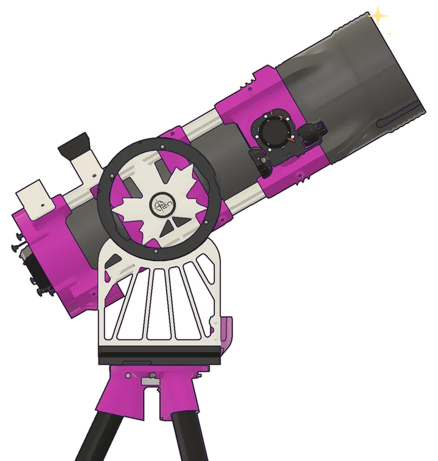

Find
Plan
Observe
Play
More

Skyward
Push-To
Made with 100% recycled star materials
Skyward Push-To
Loading…
Continue without sensors
Simulate sensors (desktop testing)
Build 93 · Nov 21
Full screen
OK
Scan a Skyward code
Point the camera at the other phone's code.
Paste instead
Cancel